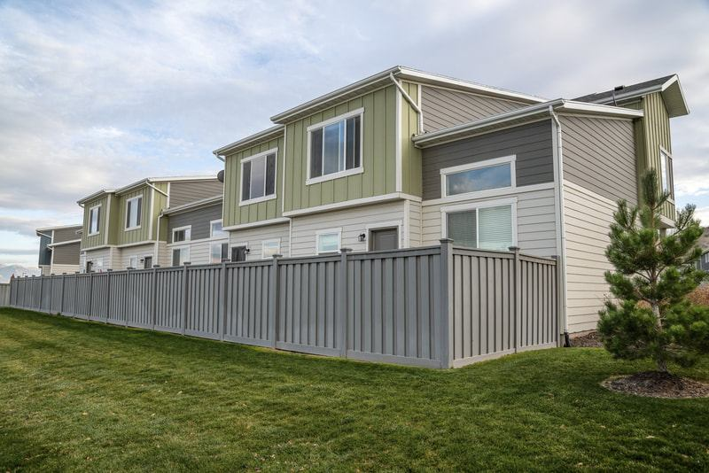

Style and height
A tall privacy panel costs more than a short picket of the same length.
Vinyl fences
Vinyl is the fence people pick when they want a privacy line and do not want to stain it every few years. In this climate the real issues are heat expansion, UV, and wind on a solid panel, not rot from humidity.


Vinyl fits rear-yard privacy on subdivision lots, including many Rio Rancho and West Side streets where an HOA wants a consistent color and a wood fence would need constant finish work. It also works for a picket look in a front yard when the height limit is short. Picket details are on the picket fencing page.
It is a poor choice for a horse pasture or a long acreage line. Those jobs belong on farm fencing. A solid vinyl privacy fence also needs the same respect for wind as a solid wood fence. The material does not stain, but it still has to stay in the ground.
Privacy, semi-privacy, or picket, plus color and gate locations.
City height limits and any HOA style sheet before the panels are ordered.
Posts go in to fit the system, with room for the ground you actually have.
Panels are built so summer heat can move them. Locked-tight joints are how vinyl buckles.
We do not publish a price list. These are the details that move an estimate.
A tall privacy panel costs more than a short picket of the same length.
Standard colors are simpler to get. Each gate adds hardware and a heavier post.
Caliche and rock slow the post holes. That is labor, and it shows up on the quote.
Hauling wood or chain link off the line is separate from the new vinyl.
Vinyl is usually priced by the layout, not by a citywide special. Height, style, gates, and the soil do more to the number than the neighborhood name. We do not publish a per-foot price because a rocky corner lot and a flat dirt yard are not the same job.
Quality vinyl is made for sun, which is why people choose it here instead of staining wood. The install still has to leave the expansion room the panel was built for. Set tight in July, a run can buckle. We assemble it so the material can move.
Yes. Privacy is the common backyard request. Picket and shorter styles are the ones that usually fit a front yard. We will not sell a six-foot privacy wall for a front setback that the city limits to a low fence.
No. That is the point of the material. It can be washed. It does not take a wood stain, and painting it is not part of a normal install. If a panel is cracked, the repair is a replacement panel, not a coat of paint.
Sometimes. Color and profile have to be close enough that the new section does not stand out. If the old line is a discontinued style, or the posts have failed, matching one panel is the wrong repair. We look at the posts before we order anything.